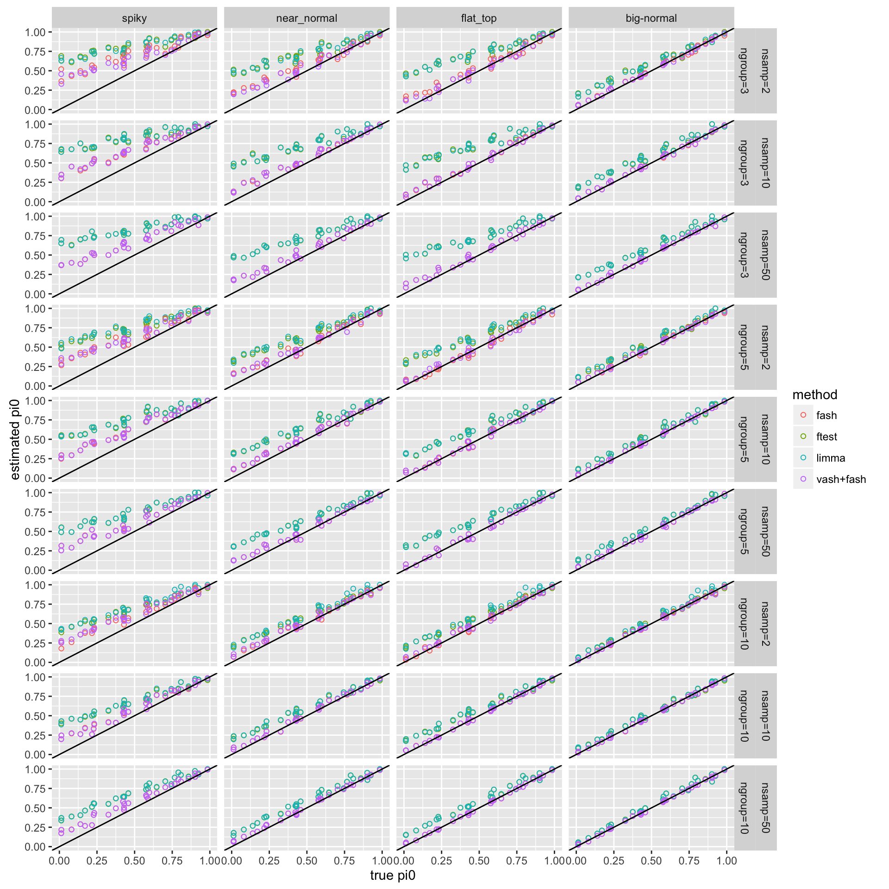
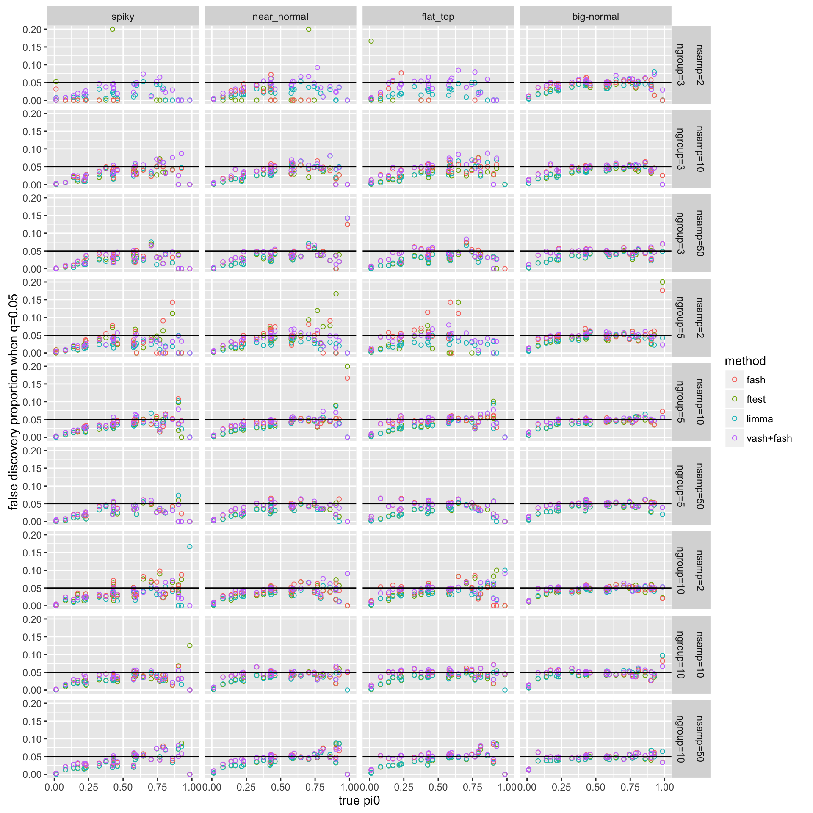
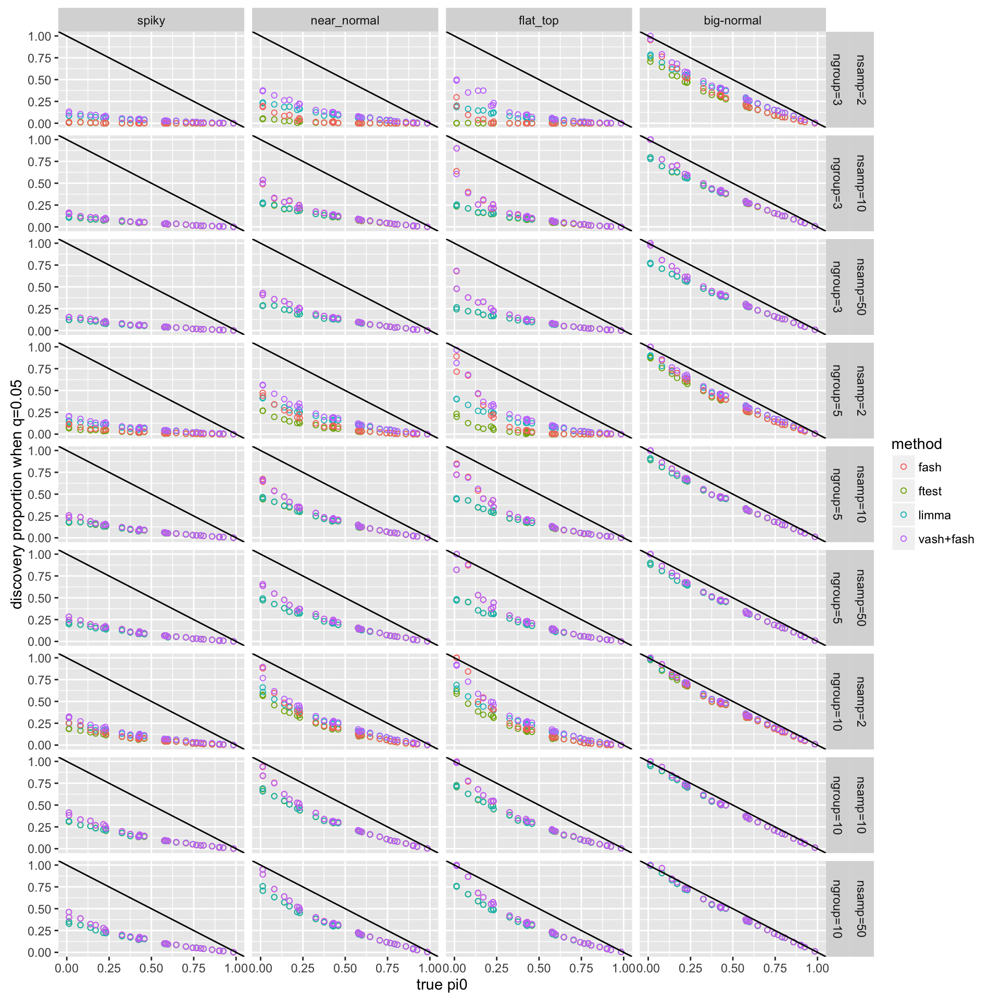
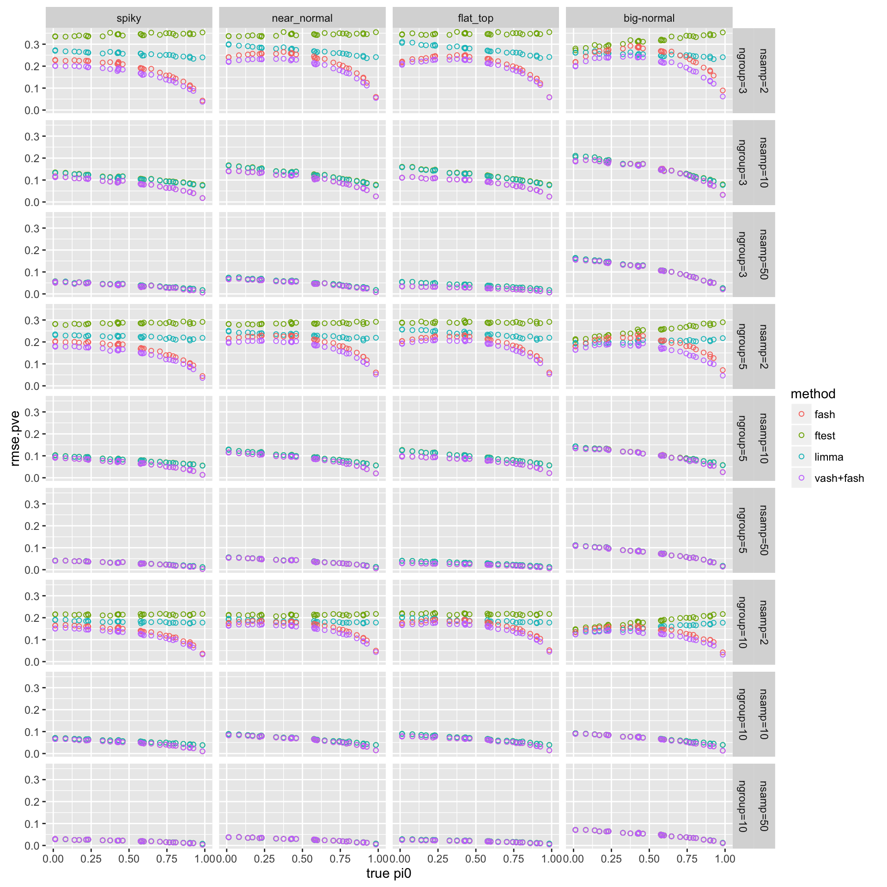
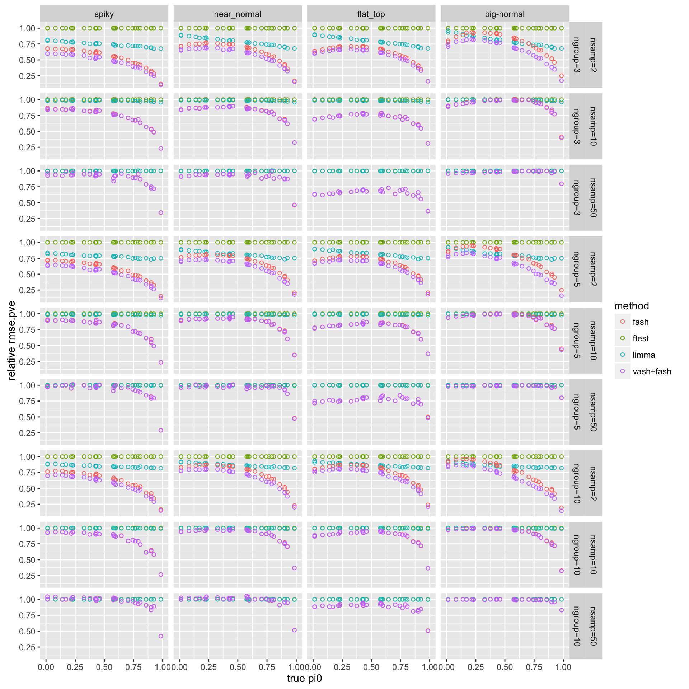
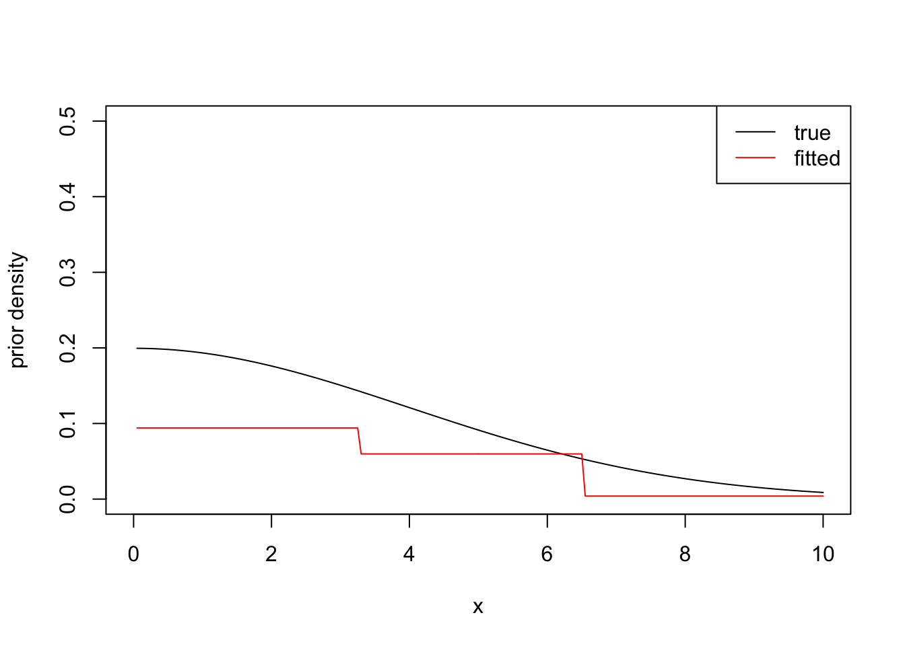

Last updated: 2016-04-19
Code version: 1890ddf157f3c13eeb62d5df5c2024a75e9f26bd
Simulate data from the Gaussian random effect model \[Y_{gi}=\mu_{gi}+\beta_{g,c(i)}+e_{gi}\] where \(\beta_{g,c}~N(0,\sigma_g^2)\), \(e_{gi}~N(0,s_g^2)\).
Then we have F-statistics \(F_g=\frac{MST_g}{MSE_g}=(1+N\sigma_g^2/s_g^2)\cdot F(df_1,df_2)\). Suppose \(\alpha:=(1+N\sigma_g^2/s_g^2)\) and \(\log(\alpha)\) comes from an non-negative unimodal prior (null: \(\sigma=0 \Leftrightarrow \log(\alpha)=0\), alternative: non-negative unimodal prior with mode at 0).
Prior scenarios: spiky, near_normal, flat_top, big-normal, “bimodal” (actually not bimodal, unimodal at non-zero).
Plot DSC results: 
Warning: Removed 142 rows containing missing values (geom_point).
Check an example where fash hardly improves PVE estimation accuracy compared to the baseline F-test:
test[test[,1]=="big-normal,nsamp=2,ngroup=3"&test$method=="fash"&test$seed==15,c(1:2,7,19)] .id seed pi0 rmse.pve_rel
2265 big-normal,nsamp=2,ngroup=3 15 0.4582218 0.9017708Check fash’s fitted prior (true prior: big-normal).
# Density of normal mixture
normalmix_dens = function(distn,xgrid){
k = length(distn$pi)
dens = colSums(dnorm(outer(rep(1,k),xgrid),distn$mu,distn$sd)*distn$pi)
return(dens)
}
# Density of uniform mixture
unimix_dens = function(distn,xgrid){
k = length(distn$pi)
dens = colSums(dunif(outer(rep(1,k),xgrid),distn$a,distn$b)*distn$pi)
return(dens)
}
meta=readRDS("../code/dsc-fash/dsc-fash-files/meta/big-normal,nsamp=2,ngroup=3/default_meta/meta.15.rds")
out.fash=readRDS("../code/dsc-fash/dsc-fash-files/output/big-normal,nsamp=2,ngroup=3/fash/fash_output/output.15.rds")
x = seq(-10,10,by=0.05)
fitted.alt = list(pi=out.fash$fit$fitted.g$pi[-1],a=out.fash$fit$fitted.g$a[-1],
b=out.fash$fit$fitted.g$b[-1])
plot(x[x>0],(normalmix_dens(meta$args$logaargs,x)[x>0])*2,type="l",ylim=c(0,0.5),xlim=c(0,10),
ylab="prior density",xlab="x")
lines(x[x>0],unimix_dens(fitted.alt,x[x>0]),col=2)
legend("topright",lty=1,col=c(1,2),legend=c("true","fitted"))
sessionInfo()R version 3.2.3 (2015-12-10)
Platform: x86_64-apple-darwin13.4.0 (64-bit)
Running under: OS X 10.10.5 (Yosemite)
locale:
[1] en_US.UTF-8/en_US.UTF-8/en_US.UTF-8/C/en_US.UTF-8/en_US.UTF-8
attached base packages:
[1] stats graphics grDevices utils datasets methods base
other attached packages:
[1] dplyr_0.4.3 tidyr_0.4.1 ggplot2_2.0.0 knitr_1.12.3
loaded via a namespace (and not attached):
[1] Rcpp_0.12.4 magrittr_1.5 munsell_0.4.3 colorspace_1.2-6
[5] R6_2.1.2 stringr_1.0.0 plyr_1.8.3 tools_3.2.3
[9] parallel_3.2.3 grid_3.2.3 gtable_0.1.2 DBI_0.3.1
[13] htmltools_0.3 yaml_2.1.13 digest_0.6.9 assertthat_0.1
[17] reshape2_1.4.1 formatR_1.2.1 evaluate_0.8 rmarkdown_0.9.5
[21] labeling_0.3 stringi_1.0-1 scales_0.3.0